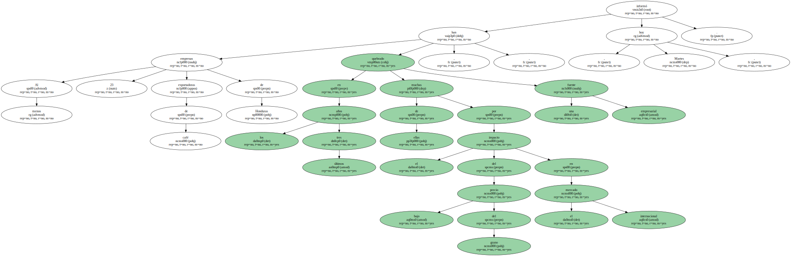
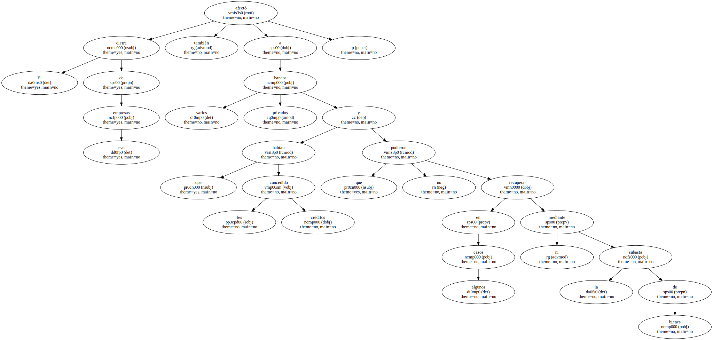
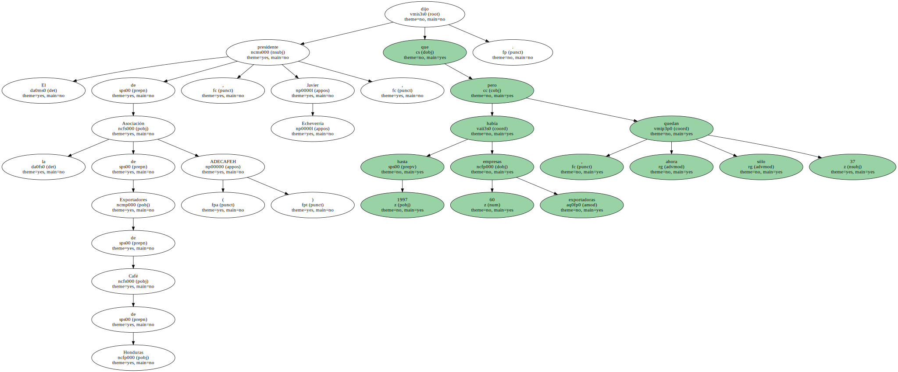
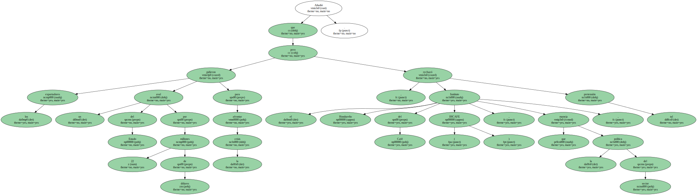
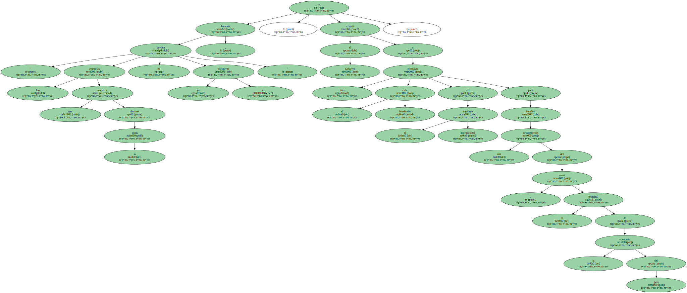
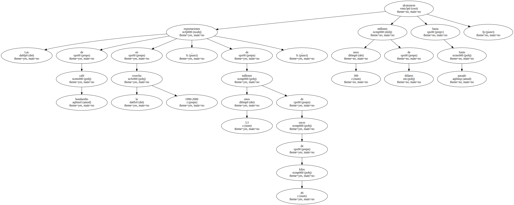

Al menos 23 empresas exportadoras de café de Honduras han quebrado en los últimos tres años , muchas de ellas por el impacto del bajo precio del grano en el mercado internacional , informó hoy , Martes , una fuente empresarial.
El cierre de esas empresas también afectó a varios bancos privados que les habían concedido créditos y que en algunos casos no pudieron recuperar ni mediante la subasta de bienes.
El presidente de la Asociación de Exportadores de Café de Honduras ( ADECAFEH ) , Javier Echeverría , dijo que hasta 1997 había 60 empresas exportadoras , pero ahora sólo quedan 37.
Las empresas sufrieron graves problemas financieros por la caída del precio internacional del café , pues quedaron con mucho grano almacenado , que tuvieron que vender a un valor muy inferior al de compra , explicó Echeverría.

Añadió que los exportadores pidieron un aval del Estado por 22 millones de dólares para afrontar la crisis , pero el Instituto Hondureño del Café ( IHCAFE ) , que maneja la política del sector , rechazó tal pretensión.
" Las empresas que murieron durante la crisis ya no se pueden recuperar " , lamentó , y exhortó al Gobierno a promover más el café hondureño en el mercado internacional para impulsar una recuperación del sector , el principal de la economía del país.
Las exportaciones de café hondureño en la cosecha 1999-2000 , de unos 3,5 millones de sacos de 46 kilos , alcanzaron unos 300 millones de dólares hasta Junio pasado.
Honduras retendrá parte de su cosecha exportable en el nuevo ciclo , como determinaron los países exportadores en Mayo pasado en Londres , para estimular la subida del precio internacional del café , cuyo cultivo está en manos de unos 80.000 productores locales.